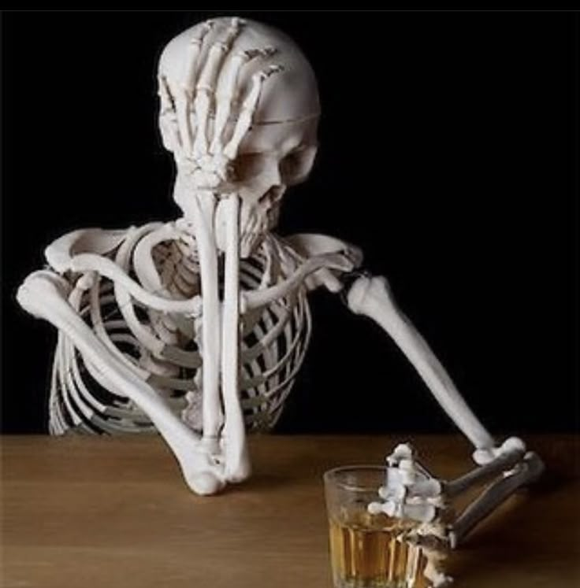

Nelson Uhunoma | WDD 130

The image in the following show's a picture of me, the picture is not neat and the reason is because i'm not a kind of person who likes selfies.

The image in the following show's a picture of me, the picture is not neat and the reason is because i'm not a kind of person who likes selfies.